英文單字卡DIY
這裡說明把自己要背的單字列表做成單字卡，方便隨身攜帶背誦。
Part I: 抓取英文單字意思、例句或音標
抓取單字音標的方法可以參考抓取奇摩字典英文單字的音標，從其他網站抓取例句跟意思的方法都是類似的。
例句的來源有兩種。
一種是從字典獲得，優點是例句品質高，但缺點是例句少。我推薦使用Cambridge English–Chinese (Traditional) Dictionary。
另一種是從新聞文章獲得，優點是例句較多，但這些例句可能會出現許多很難的單字。可以利用google限制在特定網域下搜尋的方法獲得，例如delegate site:edition.cnn.com，表示在CNN的網站中搜尋有出現delegate這個單字的文章。
把要做成單字卡的單字列表存在Excel中，如下面的範例。
Part II: 單字卡正面
- 開啟Word，選擇[郵件]標籤頁，按下[啟動合併列印]，選擇[標籤]。
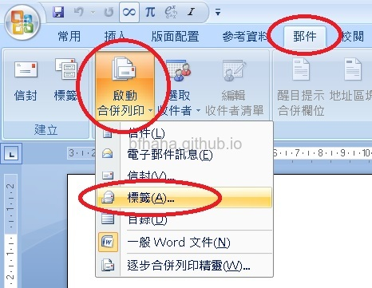
- 在出現的對話視窗中，按下[新增標籤]按鈕。
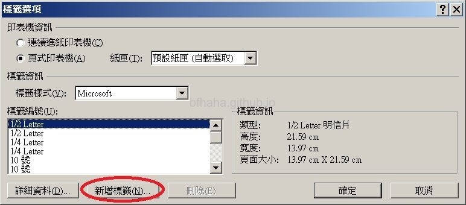
- 因為我們要設定每一張的單字卡大小為高5.25cm，寬7.425cm，大約就是A4紙張對摺4次的大小，所以按照如下的數值設定。（這些設定可以按照你的需求而變更，看你想要設定的單字卡多大，例如如果你想要高7.425cm，寬10.5cm，大約是A4紙張對摺3次後的大小，你的頁面大小就不用橫向，但我個人覺得這樣太大了。）
- 標籤名稱：單字卡。
- 上邊界、側邊界：0。（因為我們例句跟單字都會置中，所以不用留邊界。）
- 標籤高度：5.2公分。（太緊繃的數值有時候會跨到下一頁，所以我們把小數後第二位無條件捨去）
- 標籤寬度：7.4公分。
- 垂直點數設定成跟標籤高度一樣。
- 水平點數設定成跟標籤寬度一樣。
- 橫向數目：4
- 縱向數目：4
- 頁面大小：A4橫向。
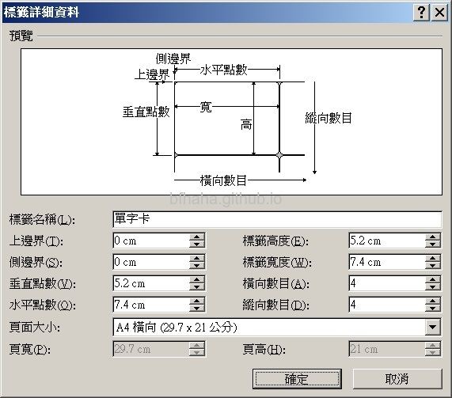
- 這個新增的標籤會歸類到[其他/自訂]這個[標籤樣式]類別中。如果要修改的話，選擇這個新增的標籤，按一下[詳細資料]就可以進入設定數值的頁面。
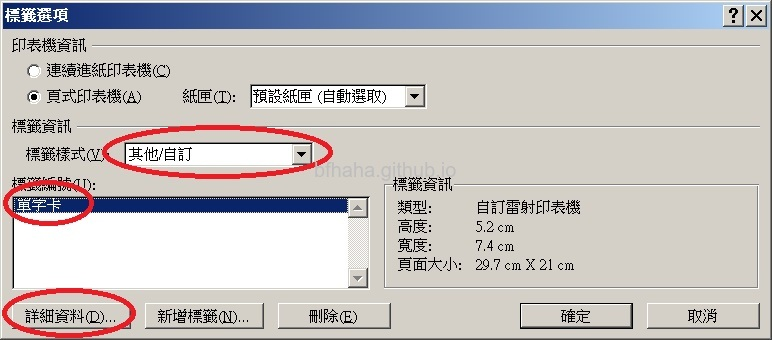
- 這時候會出現[表格工具]的標籤頁，選擇[格式]（新版的Word改成[版面配置]），然後按[檢視格線]。
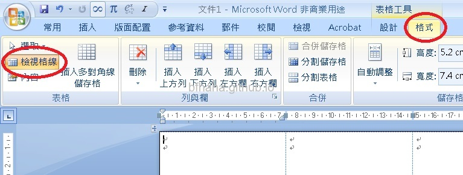
- 接著回到[郵件]標籤頁，[選取收件者]，[使用現有清單]。
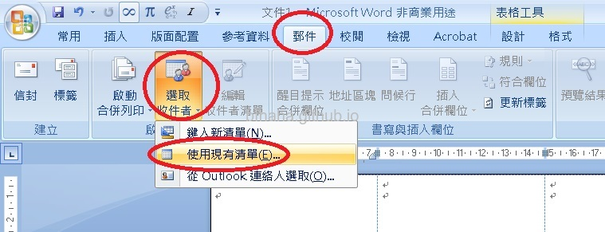
- 選擇剛剛建立的單字列表Excel檔案及工作表。
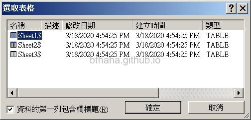
- 一樣在[郵件]標籤頁，將游標移至第一張單字卡（就是沒有顯示<<Next Record (下一筆紀錄)>>的那張，選擇[插入合併欄位]，選擇單字。（我們的單字卡正面只要放單字，背面放例句跟意思，我們等下再做背面。）
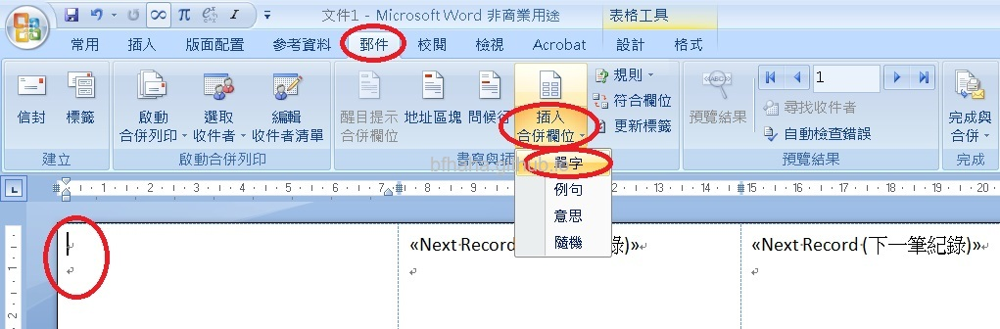
- 我們要把單字放在單字卡中間，把游標移到表格左上角，會跳出一個十字箭頭的小按鈕，點一下可全選整個表格。

- 切換到[表格工具]標籤頁，選[格式]（新版的Word改成[版面配置]），按[置中對齊]。
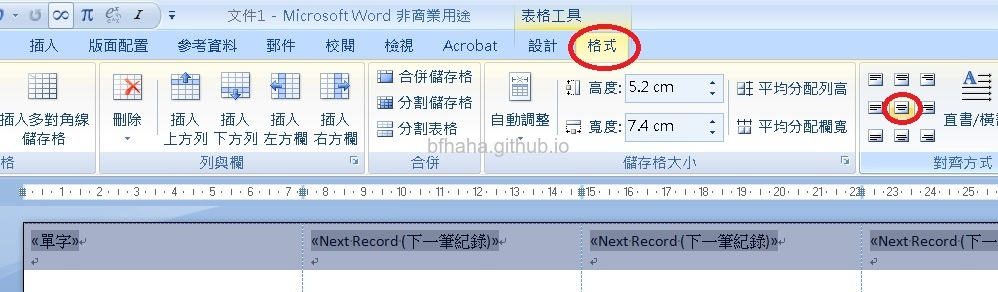
- 一樣將全部的表格選取起來，在[設計]標籤頁，下拉[框線]，選擇[所有框線]。
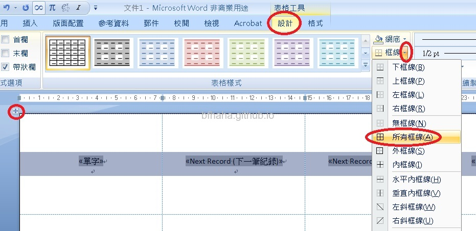
- 把單字選取起來，選擇大一點的字型。
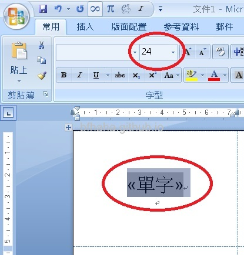
- 接著把剛剛的<<單字>>複製到第二張單字卡的<<Next Record (下一筆紀錄)>>後面，中間不用按Enter換段落。
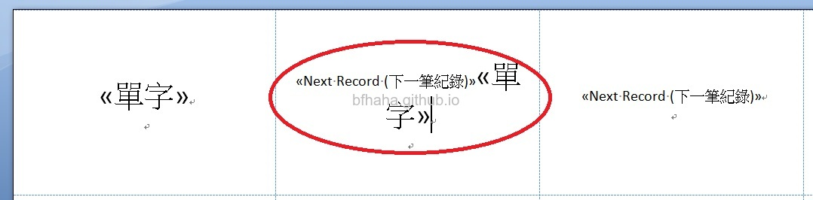
- 把這個第二張單字卡中的<<單字>><<Next Record (下一筆紀錄)>>，複製貼上到後面的每一張單字卡。在儲存格的最後一段點兩下就可以選取整個儲存格。游標在單字卡中時，按下Tab鍵就可以移動到下一張單字卡，搭配Ctrl+V貼上可以加快速度。
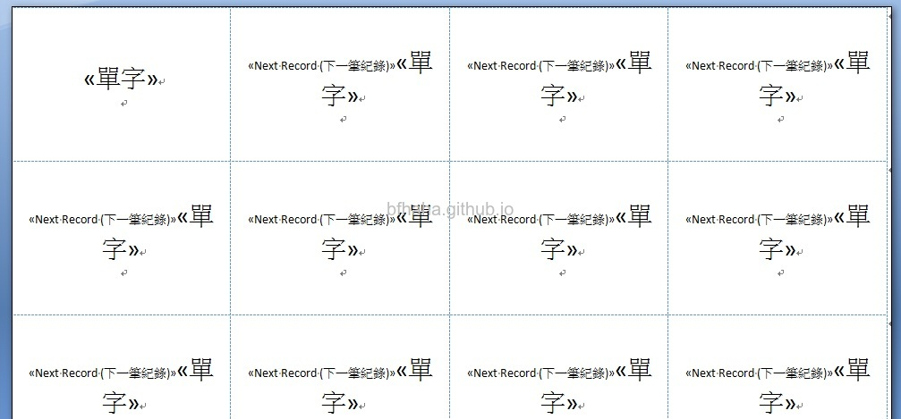
- 如果要更多單字卡的話，把游標移動到最後一張單字卡，然後按Tab鍵，就會自動新增更多單字卡。
- 回到[郵件]標籤頁，按下[預覽結果]即可顯示單字表Excel檔案中的單字。
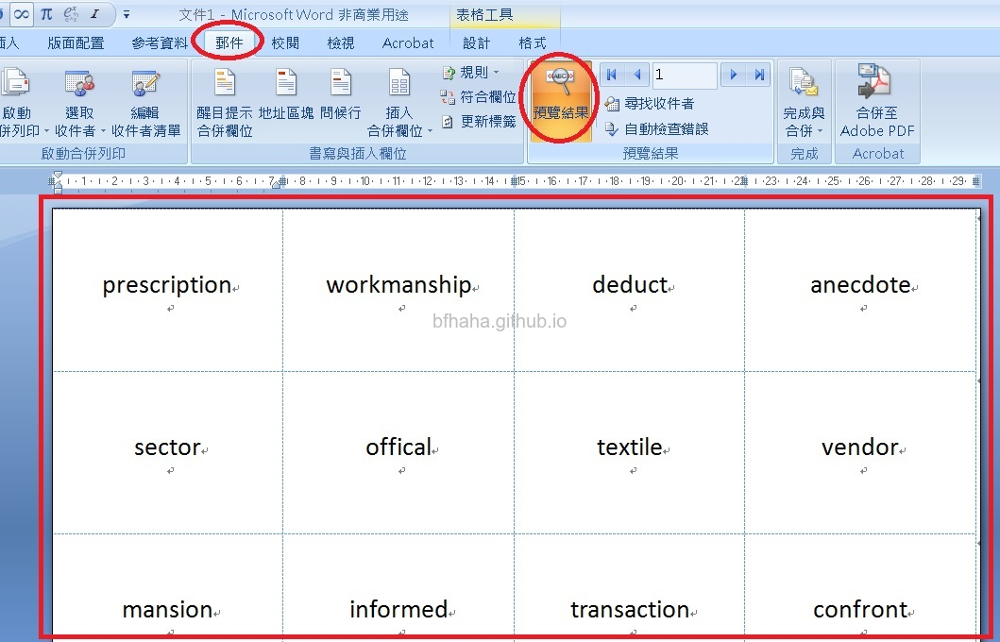
- 列印這個單字卡的單面，記得用單面列印。
- 先儲存並關閉這個單字卡的正面檔案。
Part III: 單字卡反面
接著要來製作單字卡的背面，有一個需要注意的麻煩地方是，因為單字列印在單字卡上的順序是由左到右，由上而下，但是轉到反面的時候，對於正面來說卻是由右到左。
簡單來說，如果將例句直接按順序印到單字卡的背面，就會錯位。
所以我們要稍微調整一下單字的順序，讓例句印在單字卡反面時可以跟正確的單字配對。
- 打開單字表Excel檔案。
- 為了讓單字例句列印在背面時與單字正確配對，我們要將單字的順序修改一下，將1, 2, 3, 4, 5, 6, 7, 8改成4, 3, 2, 1, 8, 7, 6, 5，以此類推，可以按照下列步驟完成。
- 新增一欄D，這要放總編號，從0開始，0, 1, 2, 3, ...
- 新增一欄E，輸入公式=FLOOR.MATH(D2/4)，這個是為了增加一欄0, 0, 0, 0, 1, 1, 1, 1, 2, 2, 2, 2, ...
- 新增一欄F，輸入公式=D2+1，這是為了把單字從1開始編號，也就是1, 2, 3, ...
- 新增一欄G，輸入公式=E2*4+MOD(4-F2, 4)
- 把這些公式向下填滿。
- 最後按這個G欄排序。
|
A |
B |
C |
D |
E |
F |
G |
| 1 |
單字 |
意思 |
例句 |
置換用1 |
置換用2 |
置換用3 |
置換用4 |
| 2 |
toll |
過路費 |
Tolls are now collected electronically on most motorways. |
0 |
=FLOOR.MATH(D2/4) |
=D2+1 |
=E2*4+MOD(4-F2, 4) |
| 3 |
esteem |
尊重 |
There has been a drop in public esteem for teachers. |
1 |
|
|
|
- 將這個新排序的單字表儲存並關閉。
- 再開啟一個新的Word檔案，按照上面一樣的步驟，製作單字卡的背面。
- 選擇[插入合併欄位]，選擇例句。
- 選擇[插入合併欄位]，選擇意思，這個意思最好設定在單字卡右下方，而且設定成淡灰色，才不會不小心看到。
- 列印反面的時候，要看印表機的設定，可以先拿一張廢紙試試剛剛的正面要用何種方式放進進紙匣或是手動送紙。